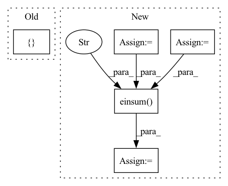

Pattern ID :10768
Before Change
j = jac_fun(p)
g = torch.bmm(j.transpose(-2, -1), f[..., None])[..., 0]
H = torch.bmm(j.transpose(-2, -1), j)
p_list = [ pAfter Change
Hc = torch.einsum("bcnp,bcni->bcpi", j, j)
// reduce multiple costs dimension through weighting
g = torch.einsum("bcp,c->bp", gc, wvec)
H = torch.einsum("bcpi,c->bpi", Hc, wvec)
p_list = []
while len(p_list) < max_iter:
h = -l*torch.linalg.lstsq(H, g, rcond=None, driver=None)[0]
p = p + h
p_list.append(p.detach())
f_prev = f.clone()
f = fun(p)
j = jac_fun(p)
gc = torch.einsum("bcnp,bcnp->bcp", j, f[..., None])
Hc = torch.einsum("bcnp,bcni->bcpi", j, j)
g = torch.einsum("bcp,c->bp", gc, wvec)
H = torch.einsum("bcpi,c->bpi" , Hc, wvec)
// stop conditions
gcon = torch.max(abs(g)) < gtol
pcon = (h**2).sum()**.5 < ptol*(ptol + (p**2).sum()**.5)In pattern: SUPERPATTERN
Frequency: 3
Non-data size: 5
Instances Fragment ID: 37152503
Project Name: hahnec/torchimize
Commit Name: 71d4a553c258e912862f87311fc88cd5cadb49d1
Time: 2022-05-16
Author: christopher.hahne@unibe.ch
File Name: torchimize/functions/gna_fun_parallel.py
M Class Name: AnonimousClass
N Class Name: AnonimousClass
M Method Name: lsq_gna_parallel(10)
N Method Name: lsq_gna_parallel(9)
M Parent Class:
N Parent Class:
M File Name: torchimize/functions/gna_fun_parallel.py
N File Name: torchimize/functions/gna_fun_parallel.py
M Start Line: 43
M End Line: 56
N Start Line: 12
N End Line: 73
Before Change
if ctx.is_initializing:
return inp
inp = inp.reshape(ctx.dims.batch, -1, *[ ctx.dims.spatial_mixing_kernelAfter Change
@with_context()
def mix(ctx: Context, inp: jnp.ndarray, depth: jnp.ndarray) -> jnp.ndarray:
weight_shape = [ctx.dims.spatial_mixing_kernel] * 2
wgt0 = get_param(ctx, f"mix_0", weight_shape)
wgt1 = get_param(ctx, f"mix_1", weight_shape)
if ctx.is_initializing:
return inp
original_shape = inp.shape
max_dims = math.floor(math.log(ctx.dims.sequence, ctx.dims.spatial_mixing_kernel))
batch = lax.max(ctx.dims.sequence // ctx.dims.spatial_mixing_kernel ** (depth % max_dims + 1), 1)
mask = jnp.logical_not(jnp.tri(ctx.dims.spatial_mixing_kernel, k=-1)) if ctx.model.autoregressive else 1
out = inp.reshape(ctx.dims.batch * batch, ctx.dims.spatial_mixing_kernel, -1, ctx.dims.features)
out = jnp.einsum("bkrf,kg,kg->bgrf", out, wgt0, mask)
out = activate(ctx, out)
out = jnp.einsum("bkrf,kg,kg->bgrf" , out, wgt1, mask)
return out.reshape(original_shape)
Fragment ID: 37152496
Project Name: homebrewnlp/homebrewnlp-jax
Commit Name: acfb8d5fbb1ba8f6b7830832f913663e426b9d09
Time: 2022-09-01
Author: 39779310+ClashLuke@users.noreply.github.com
File Name: src/model/mixer.py
M Class Name: AnonimousClass
N Class Name: AnonimousClass
M Method Name: mix(3)
N Method Name: mix(2)
M Parent Class:
N Parent Class:
M File Name: src/model/mixer.py
N File Name: src/model/mixer.py
M Start Line: 14
M End Line: 32
N Start Line: 13
N End Line: 29
Before Change
mask_cls_result, mask_pred_result)
pan_masks.append(pan_results.cpu().numpy())
assert len(img_metas) == 1
outputs = {
"detection_boxes": detection_boxes,
"detection_scores": detection_scores,
"detection_classes": detection_classes,
"detection_masks": detection_masks,
"img_metas": img_metas[0]
}
outputs["pan_results"] = pan_masks
return outputs
def instance_postprocess(self, mask_cls, mask_pred):After Change
pan_masks.append(pan_results.cpu().numpy())
if self.semantic_on:
mask_cls = F.softmax(mask_cls_result, dim=-1)[..., :-1]
mask_pred = mask_pred_result.sigmoid()
semseg = torch.einsum("qc,qhw->chw" , mask_cls, mask_pred)
semseg = semseg.argmax(dim=0).cpu().numpy()
seg_pred.append(semseg)
assert len(img_metas) == 1 Fragment ID: 37152497
Project Name: alibaba/easycv
Commit Name: 00aa7c2f7963b61f49f0db0a1266258fff5c60c5
Time: 2022-10-26
Author: yanhaiqiang.yhq@alibaba-inc.com
File Name: easycv/models/segmentation/mask2former.py
M Class Name: Mask2Former
N Class Name: Mask2Former
M Method Name: forward_test(5)
N Method Name: forward_test(5)
M Parent Class: BaseModel
N Parent Class: BaseModel
M File Name: easycv/models/segmentation/mask2former.py
N File Name: easycv/models/segmentation/mask2former.py
M Start Line: 144
M End Line: 200
N Start Line: 148
N End Line: 216